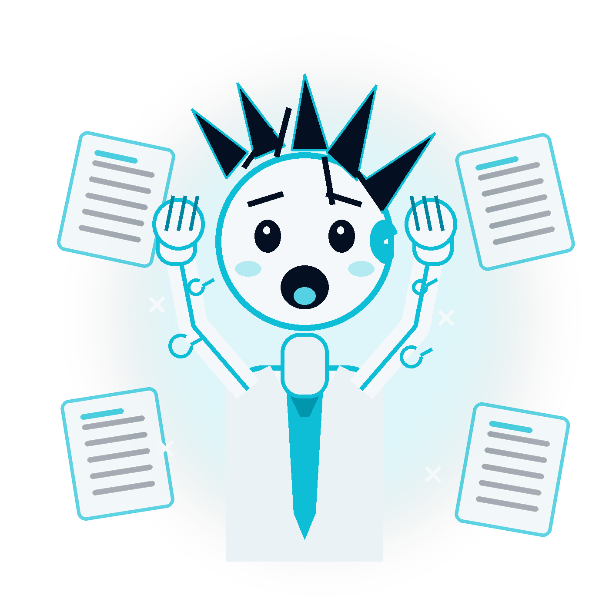
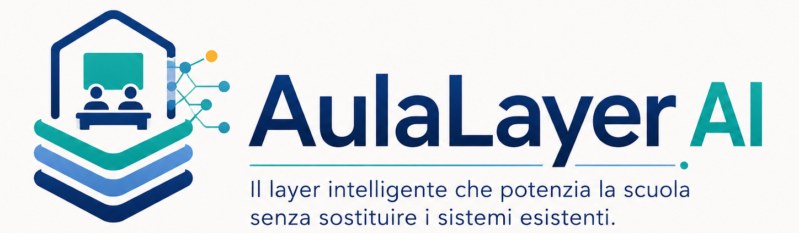

PA

8.000
istituti italiani intrappolati nella burocrazia
Ogni giorno, ore perse.
Ogni mese, opportunità bruciate.
TRE
Il problema
Il Tempo: Lo stesso collo di bottiglia
per tre categorie
Amministrativi, docenti, studenti: tutti bloccati dagli stessi processi manuali.
Amministrativi
Giorni spesi a creare sempre gli stessi documenti.
Software incompatibili.
Zero funzionalità sull'analisi dei dati.
Rischio "non conformità" alla Documentazione Ministeriale.
Docenti
Giorni persi a cercare e creare materiali didattici.
Zero dati sull'efficacia della didattica.
Zero possibilità di personalizzazione sullo studente.
Valutazioni "a sensazione".
Studenti
Giorni di attesa per una risposta.
Dati difficilemnte reperibili.
Supporto non efficace.
Portali "labirinti burocratici".
LAYER
La soluzione
AulaLayer AI
Un layer AI che lavora
sopra i sistemi esistenti

Sistemi
informativi
esistenti
→
AulaLayer
AI
→
Segreterie · Docenti · Studenti
Datacenter locale
On-premise, zero cloud
Integrazione non invasiva
No migrazione, no downtime
GDPR by design
Privacy nativa, non aggiunta
SPEED
Caso d'uso
Convocazione commissione di laurea
Stesso compito amministrativo, due modi di lavorare:
processo manuale contro automazione con AulaLayer AI.
Senza AulaLayer AI
3 ore
Creazione manuale, controllo dati, copia-incolla,
invio e verifica della convocazione.
VS
Con AulaLayer AI
1 minuto
AulaLayer AI genera la convocazione standard
partendo dai dati già presenti nei sistemi.
-99%
Tempo operativo sul singolo documento
On-Prem
I dati restano dove sono
PILOT
A che punto siamo
Idea validata.
Demo funzionante.
Fatto
Ricerca sul campo con istituti reali. Prototipo AI on-premise funzionante. Architettura GDPR-compliant definita.
Adesso
MVP in sviluppo. Stiamo cercando il primo istituto pilota per validare il modello sul campo.
Prossimi passi
Primo deployment pilota, raccolta dati di impatto, costruzione team e roadmap di scaling.
AulaLayer AI
Siamo all'inizio. Ed è esattamente dove vogliamo essere.
TEAM
AulaLayer AI
Il layer AI on-premise che libera tempo, dati e conoscenza.
Chi siamo
Ing. Giona Valentino
Ingegnere informatico — lavora sull'empowerment delle persone e delle organizzazioni attraverso l'AI.
Dott. Andrea Gaetani
Ingegnere informatico — porta nel progetto esperienza tecnica nell'implementazione di soluzioni AI.
Powered by
Dottorato ICT
Università degli Studi dell'Aquila